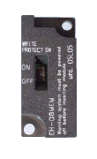
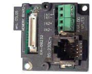
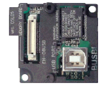

| Type | Function | |
|---|---|---|
| EH-OBMEM | Memory board | Backup of a user program and the special internal output for a setup of special function. |
| EH-OB232 | RS-232C Communication board |
RS-232C serial communication port, Analog input 2ch |
| EH-OB485 | RS-422/485 Communication board | RS-422 / 485 serial communication port, Analog input 2ch |
| EH-OBUSB | USB board | USB communication port |
Memory board
| Item | Specification |
|---|---|
| Memory capacity | 16 ksteps (128 k byte) |
| Size | 19×41.5×7.6 mm |

RS-232C Communication board

| Item | Specification |
|---|---|
| Number of port | 1 |
| Cable length | Max. 15 m |
| Communication system | Half duplex |
| Baud rate | 300 – 19,200bps |
| Connection mode | 1 : 1 |
| Protocol | Hi-Protocol(procedure1/2) / Non-Protocol |
| Item | Specification |
|---|---|
| No. of input | 2 ch. |
| Input range | 0-10V (10.24V max.) |
| Accuracy | ±1% of full cale |
| Resolution | 10 bits |
| Input impedance | 100 kΩ |
| Isolation between channels | Not isolated |
| Isolation between CPU and analog signal | Not isolated |
RS-422/485 Communication board
| Item | Specification |
|---|---|
| Number of port | 1 |
| Cable length | Max. 500 m |
| Communication system | Half duplex |
| Baud rate | 300 – 19,200bps |
| Connection mode | 1 : N (Max. 32) |
| Protocol | Hi-Protocol(procedure1/2) / Non-Protocol |
| Item | Specification |
|---|---|
| No. of input | 2 ch. |
| Input range | 0-10V (10.24V max.) |
| Accuracy | ±1% of full cale |
| Resolution | 10 bits |
| Input impedance | 100 kΩ |
| Isolation between channels | Not isolated |
| Isolation between CPU and analog signal | Not isolated |
USB board
| Item | Specification |
|---|---|
| Function | USB 232C conversion |
| USB version | Correspond USB 2.0 |
| Connector | Straight B type |
| Power | BUS power |
| Connection mode | 1 : 1 |
| COM port Driver | Download from FTDI |

Since this board is a converter from RS-232C to USB, the USB port of PC must be regarded as RS-232C port. For this reason, COM port driver is necessary for your PC. Please download the driver from following URL and install so that USB port works as serial port.